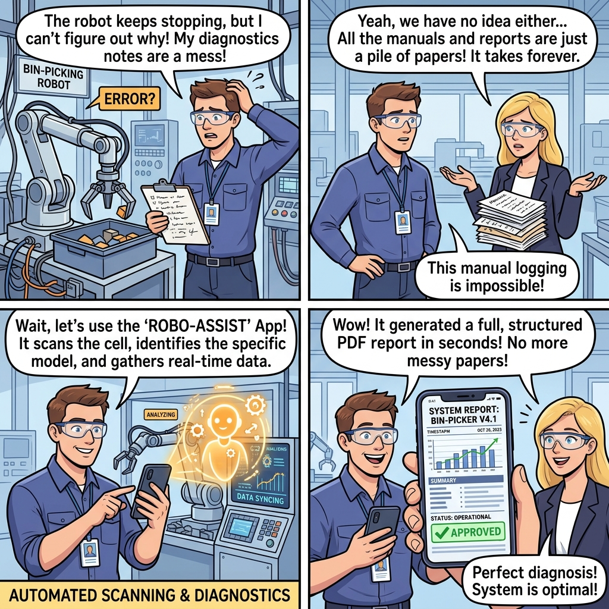

The smart data capture companion that guides you through site inspections, run feasibility checks in real-time, and recommends vision systems instantly.
Open App Dashboard
Install it as a standalone app on your iPhone or Android. Run checklists, interviews, and take environmental photos directly in the field.
Ask our built-in AI assistant to audit specifications, auto-fill fields, and diagnose badly running robot cells on-site.
Generate clean, role-aware PDF reports detailing factual cell parameters, evaluation verdicts, and system recommendations in one click.